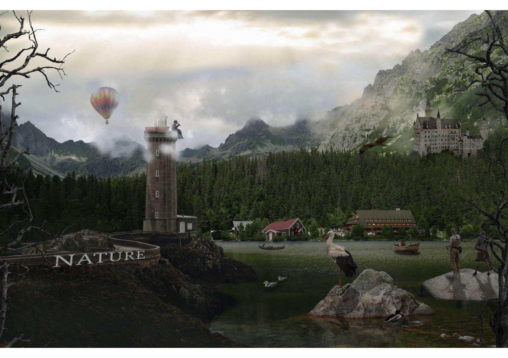
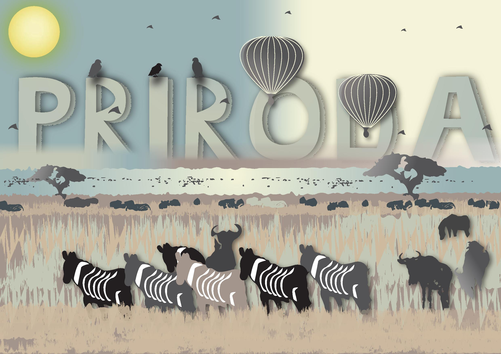

Vježba 1: Osnove Photoshopa
Izraditi kompozitnu sliku u Photoshopu kombiniranjem više fotografija pomoću tehnika retuširanja, fotomontaže i koloriranja. Koristio sam jednu baznu fotografiju (retuširati oštećenja), minimalno pet izrezanih elemenata iz druge skupine fotografija (precizno selektiranih i uklopljenih), najmanje tri vlastita elementa (uključujući jednu fotografiju na kojoj sam ja). Tematika i način kombiniranja su slobodni.
Vježba 2: Osnove Illustratora
Kreirati vlastiti font s natpisom „PRIRODA“ te smo ga iskoristili u projektom djelu zadatka. U Adobe Illustratoru ili Inkscapeu izradili smo A3 dokument u kojem se pomoću Bezierovih krivulja crta slika prema zadanom predlošku. U crtež smo uključili sve zadane elemente i kreativno uklopili riječ „PRIRODA“ izrađenu vlastitim fontom.
